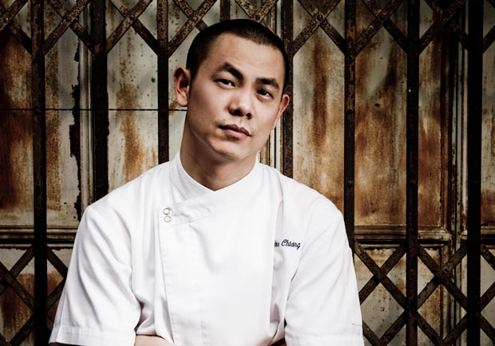

江振誠
江振誠（1976年－），英文名 André Chiang，生於臺北市士林區，臺灣籍旅外廚師，淡水商工餐飲管理畢業，中華民國第五十四屆十大傑出青年。
曾旅居新加坡於自家法式料理餐廳「Restaurant ANDRÉ」，餐廳於2016年新加坡米其林指南中評鑑為二星，2017年聖沛黎洛全球50最佳餐廳-名列第14，亞洲50最佳餐廳-名列第2，
同時榮獲新加坡最佳餐廳。於2018年2月14日結束營業，
返回家鄉臺灣單純經營台北「RAW」餐廳，並將親身經歷及知識傳承給臺灣的下一代。

薑母鴨
三杯雞
滷肉飯
心得